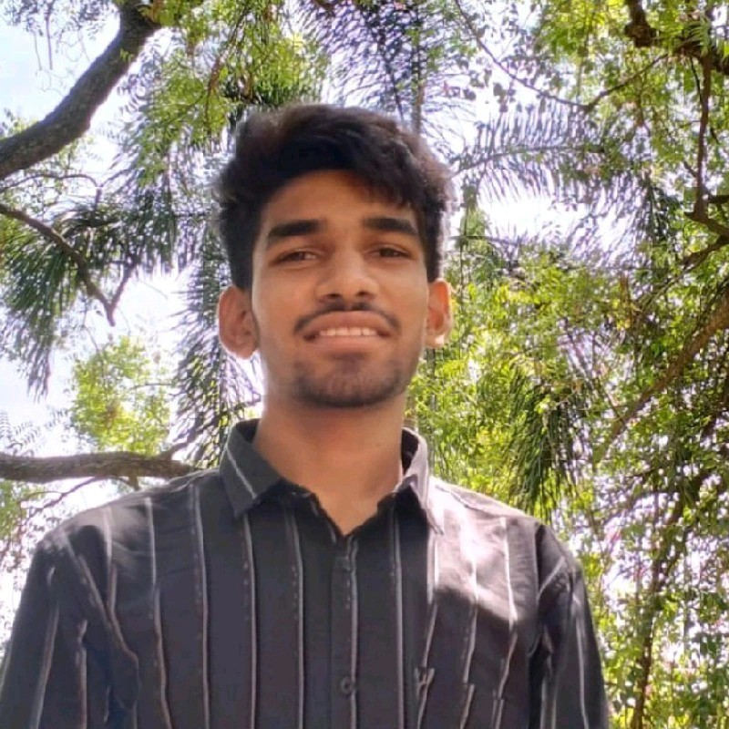

Jayanth Chintalapati

Summary
I’m a passionate B.Tech. biotechnology student at the National Institute of Technology (NIT) Warangal. My journey has been one of resilience and determination. Despite limited resources during my schooling at Sri Surya Junior College, I achieved an impressive 96.6% in my boards. But that was just the beginning!
Education
Biotechnology Btech student at NIT Warangal (2022-2026)
Work experience
Modelling and Simulation of an Enzyme
- Used Protein database and Pubchem for retrieving protein data
- Used Pymol, chimera, AutoDock tools and AutoDock Vina for Modelling
-
Web Development of Page for Disease Prediction
- Used neural Networking for plotting map
- Used HTML5, CSS, and JavaScript for creating front end page
Skills
Awards and certifications
- Problem Solving in Computer Programming
- Data Structures and Algorithms
- Learnt advanced concepts in DBMS
- Fundamentals in Operating Systems
- Completed Computer Networking in scalar
- Object Oriented Programming (C++)
Others
Contact Me
My Hobbies